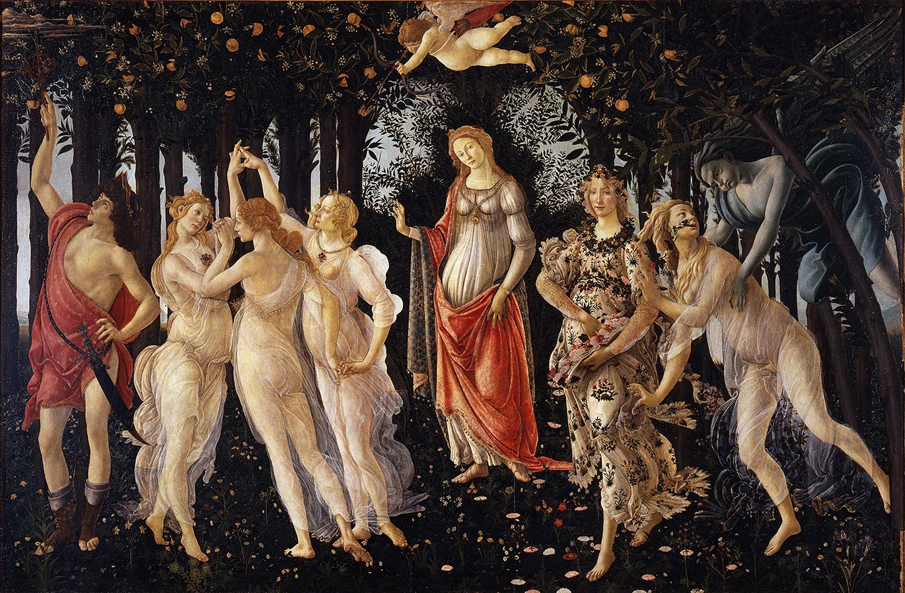
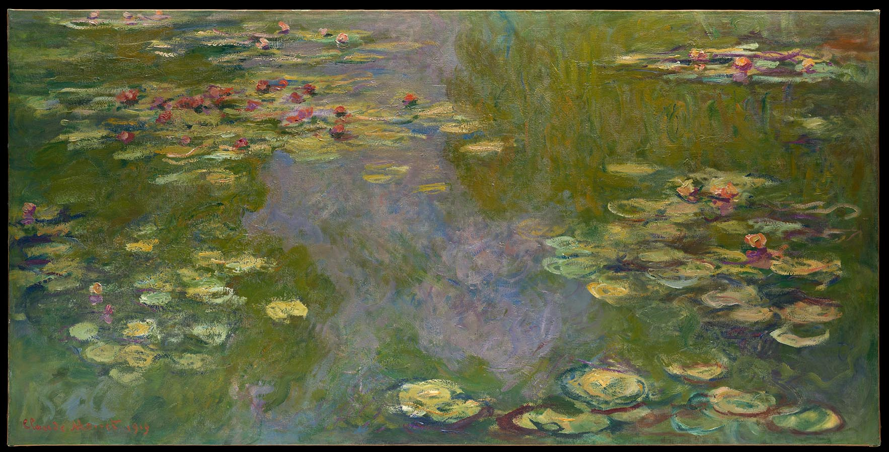

- 

- 
Art Store
where you find GENIUS and EXTROORDINARY
rapheal
ajffajdfklladfahdkfajffiegakddal
ajffajdfklladfahdkfajffiegakddal
Her book is organized into sections by epochs and ruling governments; at thems, the compression of such a long history into htis short space makes it hard to digest, but Lancaster stops often to recount captivating legends and anecdotes. She seems to have a quote from every writer or thinker who ever visited Naples or its surroundings
View DetailsAs she stresses, for most of its history, Naples was a preeminent European city, a thriving home for music, philosophy, painting and science. Her book is organized into sections by epochs and ruling governments; at times, the compressing of such a long history into this short space makes it hard to digest, but Lancaster stops often to recount captivating legends and anecdotes
View DetailsWiths this engaging history, Lancaster, a professor of Italian, seeks to restore honor to Naples, which many than pickpockets and pizza. As she stresses, for most of its history, Naples was a preminent European city, a thriving home for music, philosophy, painting and science.
View Details